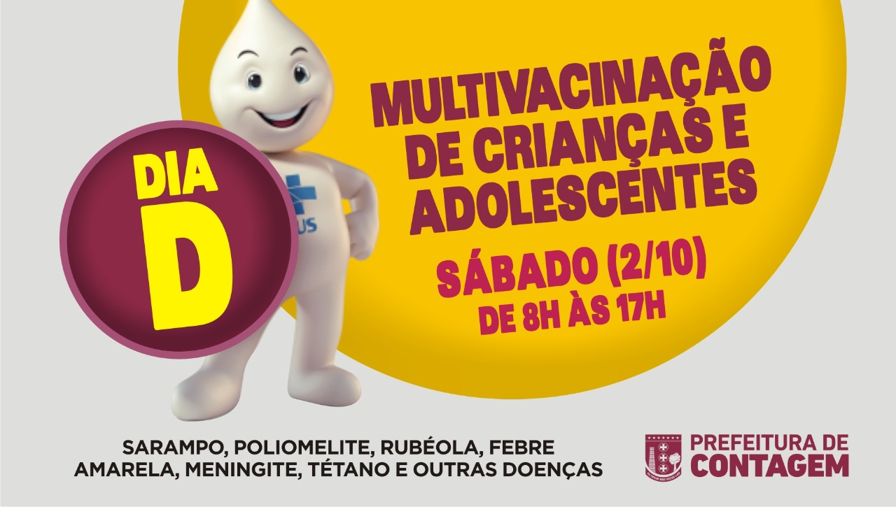

Contagem realiza neste sábado (2/10) o “Dia D” de multivacinação para crianças e adolescentes,
de zero a 14 anos, 11 meses e 29 dias. Em Contagem, 35 salas de vacinação funcionarão em esquema
especial e exclusivo, das 8h às 17h. (Confira os endereços abaixo na primeira lista).
Esta campanha vem sendo realizada em todo o território nacional com o objetivo de atualizar a
caderneta/cartão de vacinação e colocar em dia as vacinas que estão atrasadas nessas faixas
etárias. Dentre os imunizantes que serão ofertados no “Dia D” de multivacinação, constam as
vacinas contra hepatite B, febre amarela, paralisia, sarampo, caxumba, rubéola, varicela entre
outras.
De acordo com o Ministério de Saúde, desde 2015 é observada uma tendência de queda nos índices de
vacinação em decorrência do desconhecimento da importância das vacinas, fake news e medo de eventos
adversos. No entanto, o Ministério reafirma que as vacinas são seguras e imprescindíveis para
erradicar doenças, por isso, os pais ou responsáveis devem procurar as unidades de saúde para
atualizar o cartão de vacina dos seus filhos.
Para ser atendido é importante que os pais ou responsáveis levem a caderneta/cartão de vacinação,
respectivamente, de crianças e adolescentes, para que os profissionais registrem as atualizações.
Nos demais dias da semana a Campanha de Multivacinação será realizada em 32 salas de vacinação, das
8h às 16h30. Abaixo, na segunda lista, confira as salas que funcionarão nos dias úteis de
outubro.
Devido a pandemia da Covid-19, serão adotadas todas as medidas de proteção para diminuir o risco de
contágio da doença tanto entre os trabalhadores da saúde quanto na população.
VACINA DA COVID-19
A vacinação contra a Covid-19 não será aplicada no “Dia D” de multivacinação, uma vez que o foco
deste evento é a imunização contra outras doenças. Recentemente, o Ministério da Saúde suspendeu a
indicação de intervalo de 14 dias de administração entre a vacina contra a Covid-19 e demais imuzantes,
portanto é imprescindível que todos os adolescentes que receberam a vacina contra o coronavírus
participem do “Dia D” de multivacinação e completem o esquema vacinal contra outras doenças.
Em Contagem, os adolescentes a partir de 15 anos já podem ser vacinados contra a Covid-19 de
segunda a sexta-feira, de 8h às 16h nas Unidades Básicas de Saúde.
Não deixe para a última hora. Vacinas salvam vidas!
*Salas de Vacinação que funcionarão no dia “D” sábado, (2/10)*
*DISTRITO ELDORADO*
UBS Novo Eldorado – Rua Tubira, 173 – bairro Santa Cruz
UBS Unidade XV – Rua das Mangueiras, 209 – Eldorado
UBS CSU Eldorado – Rua Portugal, 50 – bairro Glória
UBS Parque São João – Rua Sete, 54- Parque São João
UBS Jardim Bandeirantes – Avenida Água Branca, 817 – Jardim dos Bandeirantes
*DISTRITO INDUSTRIAL*
UBS Jardim Industrial – Rua Henrique Zikler, nº 97 – Jardim Industrial
UBS Vila Bandeirantes – Rua Oito, 20 – Santa Maria
UBS Amazonas – Rua Marquês do Paraná, 111 – Amazonas
*DISTRITO NACIONAL*
UBS Amendoeiras – Rua Seis, 52 – Vale das Amendoeiras
UBS Joaquim Murtinho – Rua Lúcia Muniz (esquina com 1º de Maio), 476 – Nacional
UBS Estrela Dalva – Rua Búzios, 56 – Estrela Dalva
UBS Nacional – Rua Benjamim Constant, 701 – Nacional
*DISTRITO PETROLÂNDIA*
UBS São Luiz I – Rua Itutinga, 242 – São Luiz
UBS Campo Alto – Avenida B, 1012 – Campo alto
UBS Petrolândia 1- Rua Benzina, 10, esq. rua Refinaria Gabriel Passos – Petrolândia
UBS Sapucaias Rua Amazonitas, 230 – Sapucaias
*DISTRITO RESSACA*
UBS Novo Boa Vista – Rua Panamá , 60 – Boa Vista
UBS Vila Pérola – Rua Campina Verde, 18 – Vila Pérola
UBS Oitis – Rua Trinta e Quatro, 499 – Oitis
*DISTRITO RIACHO*
UBS Riacho – Avenida Rio Negro, 95 – Riacho das Pedras – Riacho
UBS Monte Castelo – Rua Cubatão, 336 – Monte Castelo
UBS Novo Riacho – Rua Rio Orenoco, 457 – Riacho das Pedras
UBS Flamengo – Rua Monsenhor Messias, 456 – Flamengo
*DISTRITO SEDE*
UBS Praia – Rua do Registro, 1676 – Praia
UBS Maria da Conceição – Rua Pará de Minas, S/N – Maria da Conceição
UBS Santa Helena – Rua Délio da Consolação Rocha, 705 (antiga rua Oito) – Santa Helena
UBS rua Wilson José de Souza Bicalho, 40 – Bernardo Monteiro (próximo Cemei)
UBS CAD – Avenida Prefeito Gil Diniz, 401 A – Centro
*DISTRITO VARGEM DAS FLORES*
UBS Retiro – Avenida dos Imigrantes, S/N – Retiro
UBS São Judas Tadeu – Rua VL7, 259 – Nova Contagem
UBS Nova Contagem II – Rua VL35, 138 – Nova Contagem
UBS Ipê Amarelo – Rua Jequitibás, 10 – Ipê Amarelo
UBS Icaivera – Avenida Sycaba, 10 – Icaivera
UBS Tupã – Rua F, 63 – Tupã
UBS Darcy Ribeiro – Rua João Luiz de Farias, 166 – Darcy Ribeiro
*31 Salas de vacinação que funcionarão nos dias úteis entre 1º e 29 de outubro*
*REGIONAL ELDORADO*
UBS Jardim Bandeirantes – Avenida Água Branca, 817 – Bandeirantes
UBS Parque São João – Rua 7, 54 – Parque São João
UBS Jardim Eldorado – Rua Canafístula, 274, Jardim Eldorado
UBS Unidade XV -Rua Mangueiras, 209 – Eldorado
*REGIONAL INDUSTRIAL*
UBS Amazonas – Rua Marquês de Paraná, 111 – Amazonas
Vila Bandeirantes – Rua Oito, 20 – Santa Maria
Vila São Paulo – Rua Alexandre Herculano, 35 – Vila São Paulo
*REGIONAL NACIONAL*
UBS Estrela Dalva – Rua Búzios, 56 – Estrela Dalva
UBS Ilda Efigênia -Rua Paineiras, 20 – Novo Recanto
UBS Joaquim Murtinho – Rua Lucia Muniz, 476 – Nacional
*REGIONAL PETROLÂNDIA*
Campo Alto – Avenida B, 1012 – Tropical
São Luiz I – Rua Itutinga, 242 – São Luiz
Sapucaias – Rua Amazonita, 230 – Sapucaias
*REGIONAL RESSACA*
UBS Morada Nova – Rua José Mendes Ferreira, 102 – Morada Nova
UBS Novo Boa Vista – Rua Panamá, 60 – Jardim do Lago
UBS Oitis – Rua Trinta e Quatro, 499 – Oitis
UBS Vila Pérola – Rua Campina Verde – 18 – Novo Progresso
*REGIONAL RIACHO*
UBS Flamengo – Rua Monsenhor Messias, 456 – Flamengo
UBS Novo Riacho – Rua Rio Orenoco, 457 – Riacho das Pedras
UBS Riacho – Rua Rio Negro, 95 – Riacho das Pedras
*REGIONAL SEDE*
UBS Bernardo Monteiro – Rua Wilson José de Souza Bicalho, 40 – Bernardo Monteiro
UBS CAD Unidade Centro – Rua Bernardo Monteiro, 135 – Centro
UBS Praia – Rua do Registro, 1676 – Praia
*REGIONAL VARGEM DAS FLORES*
UBS Darcy Ribeiro – Rua João Luiz de Faria, 166 – Darcy Ribeiro
UBS Icaivera – Avenida Sycaba, 10 – Icaivera
UBS Ipê Amarelo – Rua Jequitibás, 10 – Ipê Amarelo
UBS São Judas Tadeu – Rua VL7, s/n – Nova Contagem
UBS Nova Contagem II – Avenida VL 35, 228 – Nova Contagem
UBS Retiro – Rua dos Imigrantes, s/n – Retiro
UBS Vila Renascer – Avenida VP 2, 1.839 – Nova Contagem